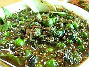

Sambal Leunca

BAHAN-BAHAN
- 100 gr cabai merah
- 100 gr lencak
- 60 gr bawang merah
- 50 gr bawang putih
- 10 gr terasi
- 20 gr gula merah
- 10 gr garam
- 10 ml minyak goreng
CARA MEMBUAT
- semua bahan-bahan di haluskan, kecuali lencak
- tumis hingga matang
- kemudian campurkan lencak
- bubuhi garam dan gula merah
- sambel lencak siap di sajikan